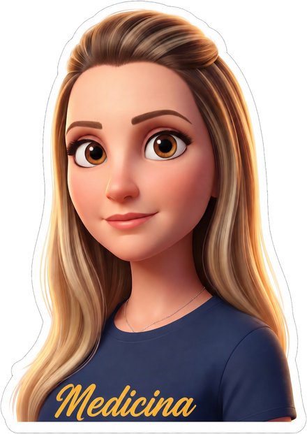

Medicina · 3.º Ano · 2026/1
Enfermeira há 20 anos (IELUSC) e estomaterapeuta (PUC-PR), hoje no 3.º ano de Medicina — voltei a estudar para poder oferecer mais aos pacientes que já atendo. Estes cadernos são o meu jeito de estudar: cada disciplina virada no raciocínio que ela cobra, testada em questões comentadas uma a uma. Fiz para mim, deixo aberto porque material bom de estudo é melhor quando circula.
— Pri

Cadernos e leituras
Raciocínio em camadas, do topográfico ao etiológico. Síndromes respiratórias, cardiovasculares, renais e abdominais, com feedback por distrator.
Estrutura, função e déficit. Do fácil ao muito difícil, com filtro por tema, comentário em cada alternativa e opção de refazer só os erros.
Os 32 capítulos ordenados do caudal ao rostral. Trilho de progresso por região, gabarito distribuído e comentário em cada alternativa.
Artigos de interesse, diretrizes recentes e recomendações — cada entrada com resumo curto e o motivo de importar na prática.
Quatro pranchas com marcadores numerados: córtex, corte coronal, medula e cerebelo. Identifique cada estrutura e confira o comentário.
Anticoagulantes, antiagregantes, antiarrítmicos e hipolipemiantes.